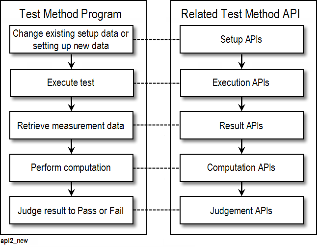

Test method for DAC test
After all the digital setup and analog setup are finished, you need develop a test method to control the DAC test process.

Shown as the above figure, the typical testing flow in a test method program consists of the following five steps.
Changing existing setup data (or setting up new setup data)
You can create new setup data .
You can also change the existing setup data in case that multiple measurements are performed with different conditions in a test method program. APIs for setting up the measurement conditions, which are called Setup APIs.
Executing test
After conditioning the setup data, you can start test execution by using one of Execution APIs, which correspond to the types of tests.
Retrieving raw measurement data
After measurement, you can retrieve the raw measurement data (for example, analog waveform data, single value, and so on). APIs for retrieving measurement data are called Result APIs.
For DAC test, the member function getWaveform is used.
Computing data
You can compute the measurement data to obtain the desired parameters. All calculations are performed on the system controller. APIs for computing data are called Computation APIs. They support dozens of computation functions.
For DAC linearity test, DSP_LINEAR API can be used to calculate DNL and SNL.
For DAC distortion test, DSP_THD API can be used to compute SNR and THD.
Judging result to pass or fail
Comparing the result values against the limits specified, you can judge whether the obtained result has passed or failed in order to determine the pass/fail of the testsuite.
APIs for judging the result are called Judgment APIs, such as TEST. In addition to judgment, these APIs can be used for data logging.
Example
The following is an example of test method for DAC linearity which include the above five steps.
INT Offline_flag = 0;
DOUBLE tout, offset_val, DeviceLSB;
INT i, num_pts, val;
ARRAY_D dgtz_waveform;
ARRAY_D dle_out;
ARRAY_D ile_out;
LINEARtype linear_result;
/* Step 1: Change existing setup data */
ON_FIRST_INVOCATION_BEGIN();
GET_SYSTEM_FLAG("offline", &Offline_flag);
Routing.pin(dac_pin).connect(TM::SINGLE);
FLUSH();
DGT(dac_pin).enable();
/* Step 2: execute test */
tout=1.0;
START_TEST();
WAIT_TEST_DONE(tout);
ON_FIRST_INVOCATION_END();
/* Step 3: Retrieve raw measurement data */
// Get Digitized Waveform Data
dgtz_waveform = DGT(dac_pin).getWaveform();
num_pts=dgtz_waveform.size();
// Disconnect
DGT(dac_pin).disable();
Routing.pin(dac_pin).disconnect();
FLUSH();
// Adjust offset voltage
offset_val = DGT(dac_pin).getVOffset();
for(i=0;i<num_pts;i++){
dgtz_waveform[i] = dgtz_waveform[i] + offset_val;
}
PUT_DEBUG(dac_pin, "Source", dgtz_waveform);
/* Step 4: compute data */
if(calc_mthd=="END_PT") DSP_LINEAR(dgtz_waveform,
&linear_result, dle_out, ile_out, END_PT);
else if(calc_mthd=="ZERO_PT") DSP_LINEAR(dgtz_waveform,
&linear_result,dle_out, ile_out,ZERO_PT);
else val=DSP_LINEAR(dgtz_waveform, &linear_result,
dle_out, ile_out, MIN_RMS);
DeviceLSB = (dgtz_waveform[255] - dgtz_waveform[0])/(256-1);
for(i=0;i<256;i++){
dle_out[i] = dle_out[i]/DeviceLSB;
ile_out[i] = ile_out[i]/DeviceLSB;
}
PUT_DEBUG(dac_pin, "ILE", ile_out);
PUT_DEBUG(dac_pin, "DLE", dle_out);
/* Step 5: judge result to pass or fail and log result */
TEST( dac_pin, "INL", linear_result.iamax/DeviceLSB, 1 );
TEST( dac_pin, "DNL", linear_result.damax/DeviceLSB, 1 );Functional changes
- Introduced before SmarTest 6.3.2